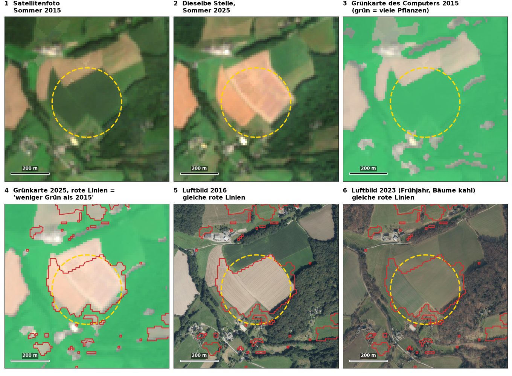
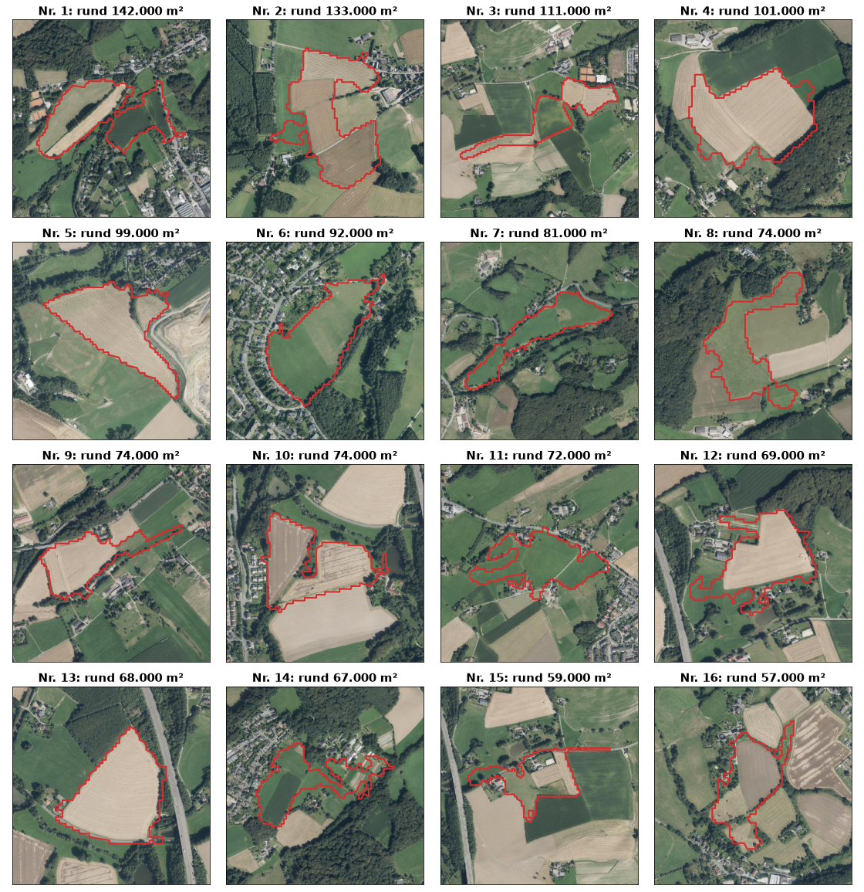

Sind in Wuppertal Bäume verschwunden?
Kurz: Mit unseren Karten lässt sich das weder beweisen noch widerlegen. Wir haben Satellitenfotos von 2015 und 2025 verglichen und markiert, wo es weniger grün geworden ist. Aber der Computer sieht nur „grün oder nicht grün". Ob dort Bäume, Wiese oder Acker waren, erkennt er nicht. Die größten markierten Stellen sind Äcker und Wiesen.
1. Was haben wir gemacht?
- Ein Satellitenfoto pro Jahr. Für jeden Sommer von 2015 bis 2025 (immer Ende Juli bis Mitte September) haben wir aus allen brauchbaren Aufnahmen ein einziges Foto gerechnet. Wolken und Schatten werden dabei weggelassen. Für den Vergleich im Beispiel unten nehmen wir die Jahre 2015 und 2025.
- Grün oder nicht grün. Das Foto besteht aus Quadraten von 10 mal 10 Metern (etwa acht Parkplätze). Pflanzen werfen Sonnenlicht anders zurück als Boden oder Häuser. Der Computer misst das für jedes Quadrat und rechnet daraus eine Zahl. Liegt sie über einer Grenze, die wir einmal festgelegt haben, gilt das Quadrat als „viel Grün".
- Vergleich. War ein Quadrat 2015 „viel Grün" und 2025 nicht, markiert die Karte es als „Verlust". Damit ist aber nur „weniger Grün" gemeint, nicht „Bäume weg". Umgekehrt heißt „Zuwachs" „mehr Grün".
2. Ein Beispiel, Schritt für Schritt

Alle sechs Bilder zeigen denselben Ort (Balken unten links: 200 m). Das Feld, um das es geht, liegt im gelben Kreis.
- Bild 1 und 2: Satellitenfotos. 2015 ist das Feld dunkelgrün, 2025 hell orange (vermutlich abgeerntet oder gepflügt).
- Bild 3 und 4: Was der Computer daraus macht. Grün gefärbt = „viel Grün", ungefärbt = nicht. 2015 ist fast alles grün, auch der Wald und die Wiesen. Das ist das Problem: Wald, Wiese und Acker sehen für den Computer im Sommer gleich aus. 2025 ist das Feld ungefärbt, deshalb zieht er rote Linien. Uns interessiert die große in der Mitte, die anderen sind kleinere Stellen (Höfe, Gärten, Wiesenränder).
- Bild 5 und 6 (der gelbe Kreis zeigt nur, welches Feld gemeint ist): Dieselben roten Linien auf echten Luftbildern aus Flugzeugen. Man erkennt Furchen im Boden: Das ist ein Acker. Bäume stehen darin auf beiden Bildern nicht. Der Wald liegt daneben, er gehört nicht zur roten Fläche.
Warum Luftbilder aus 2016 und 2023? Das Land fliegt nicht jedes Jahr über Wuppertal. Aus 2015 und 2025 gibt es keine, 2016 und 2023 sind die nächsten. Die Luftbilder dienen nur dazu zu sehen, was an der Stelle liegt (Acker, Wiese, Wald). Das Luftbild 2023 ist aus dem Frühjahr, deshalb sehen Laubbäume braun aus, sie sind nicht abgestorben.
Woher stammen die Luftbilder? Von der Landesvermessung NRW („Geobasis NRW"). Sie sind scharf genug für einzelne Bäume und unabhängig von unserer Rechnung. Die Stellen, die wir uns ansehen, kommen aber aus unserer Rechnung.
3. Ist das ein Einzelfall?
Hier die 16 größten markierten Flächen der Stadt auf dem Luftbild 2016 (die Zahl nennt die Größe; 100.000 m² sind etwa 14 Fußballfelder).

Der größte Teil jeder Fläche sieht nach Acker oder Wiese aus. Bei einigen gehören auch Gärten, Höfe oder Häuser dazu (Nr. 1, 6, 11, 14, 15, 16). Bei Nr. 1 (rechter Teil) und Nr. 14 ist ein dunkler Bereich dabei, den wir nicht sicher einordnen können. Das Bild zeigt nur 2016 und damit nur, was dort liegt. Der Unterschied 2015 → 2025 kommt aus der Rechnung.
Grenze: Das gilt für die größten Flächen. Die vielen kleinen Flächen haben wir nicht systematisch angesehen. Dort könnten einzelne Bäume weggekommen sein; das lässt sich mit 10-m-Quadraten nicht sagen.
4. Was folgt daraus?
- Die Karte zeigt, wo es zwischen zwei Sommern grüner oder weniger grün geworden ist. Wie genau sie dabei ist, haben wir nicht gemessen; Wetter und Ernte beeinflussen das Ergebnis.
- Die großen Stellen sind überwiegend Äcker und Wiesen. Was dort wächst oder geerntet wird, wechselt von Jahr zu Jahr, auch das Wetter spielt eine Rolle. Das hat mit Bäumen nichts zu tun.
- Deshalb belegt unsere Karte keinen Rückgang der Bäume, und sie widerlegt ihn auch nicht.
- Dafür bräuchte man Daten, die Bäume von Feldern trennen, zum Beispiel Höhenmessungen (Bäume sind hoch, Felder nicht) oder eine Liste aller erfassten Bäume der Stadt (Baumkataster).
Und jetzt? Wer die Frage „Sind Bäume verschwunden?" beantworten will, braucht einen anderen Weg: zum Beispiel beim Grünflächenamt nach dem Baumkataster fragen oder Höhenmessungen auswerten lassen. Unsere Karten können dafür höchstens zeigen, wo man genauer hinschauen sollte.
5. So kannst du es selbst nachsehen
- Öffne diese Seite mit allen Karten-Links: benjamin-bleske.github.io/wuppertal-vegetation-sentinel2.
- Öffne in einem zweiten Browserfenster die Online-Karte der Stadt Wuppertal (das Geoportal).
- Halte auf der ersten Seite den Link „Veränderung 2015 → 2025" mit der Maustaste fest, ziehe ihn auf die Karte im zweiten Fenster und lass los. Mache dasselbe mit „Luftbild 2016".
- Zoome auf eine rot markierte Fläche und schalte das Luftbild ein und aus. Du siehst selbst, ob dort Wald oder Feld ist.